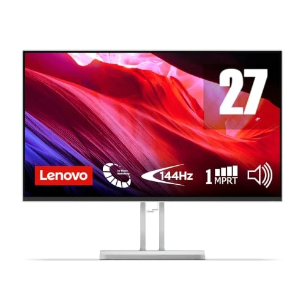
Lenovo
Lenovo L27-4C
Valoración del editor
Puntuaciones editoriales de 0 a 10, calculadas a partir de las especificaciones y comparables entre todos los monitores de esta web — no son una afirmación del fabricante.
Ficha técnica completa
| Pantalla | |
| Tipo de panel | IPS |
|---|---|
| Tamaño de pantalla | 27" |
| Resolución | 1080p |
| Curvo | No |
| Curvatura | — |
| Brillo | — |
| HDR | — |
| Rendimiento gaming | |
| Tasa de refresco | 144 Hz |
| Tiempo de respuesta (GtG) | 1 ms |
| Tecnología de sincronización | FreeSync |
| Ergonomía y construcción | |
| Ajuste de altura | No |
| Pivote (modo retrato) | No |
| Peso | — |
| Garantía | — |
Otros datos
Nuestra opinión
El L27-4C apuesta por un panel IPS de 27" con 144Hz y 1ms de respuesta, certificación TÜV Rheinland de confort visual y altavoces integrados de 3W — un conjunto sólido para quien quiere pasar de un monitor de 24" a uno más grande sin gastar en extras que no va a usar.
Las reseñas son consistentemente positivas: los compradores destacan lo fácil del montaje y la nitidez de imagen para tareas diarias, streaming y trabajo. Una reseña detallada señala como únicos peros el sonido de los altavoces integrados (correcto pero no destacable) y una ligera tonalidad amarillenta en la parte inferior del panel — un defecto menor y conocido en monitores IPS económicos de este tipo, no exclusivo de este modelo.
Con un 30% de descuento activo y casi 4,6 estrellas sobre 112 valoraciones, es de las opciones mejor valoradas de este lote de incorporaciones.
- 30% de descuento sobre su precio recomendado
- 144Hz, 1ms y certificación TÜV Rheinland de confort visual
- 4,6 estrellas sobre 112 valoraciones — de las mejor valoradas de esta ronda
- Altavoces integrados correctos pero no destacables, según varias reseñas
- Una reseña detallada señala una ligera tonalidad amarillenta en la parte inferior del panel
- Sin ajuste de altura, solo inclinación
Ideal para: Quien quiere dar el salto a 27" y 144Hz con buena relación calidad-precio, sin depender del sonido integrado.
Qué dicen los compradores
Con 112 valoraciones y 4,6 estrellas, los compradores destacan lo fácil del montaje y la buena imagen; una reseña detallada menciona un sonido de altavoces mediocre y una ligera tonalidad amarillenta en la parte inferior del panel.
★★★★
Merche — Con dos semanas de uso puedo decir que es una pantalla que se ve muy bien. Lo de los altavoces es un plus pero el sonido es malo, de ahí que no le ponga cinco estrellas, algo que es también por las tonalidades de amarillo que muestra, sobre todo en la parte inferior.
★★★★★
Pablo — Mejor de lo que esperaba. Lo único que veo mejorable es el audio incorporado, pero era de esperar.
Resumen basado en las reseñas visibles en Amazon en el momento de la captura.
Accesorios recomendados para tu monitor
Complementos populares que suelen comprarse junto a un monitor nuevo — no forman parte de esta comparativa de monitores, pero son útiles para tu montaje.
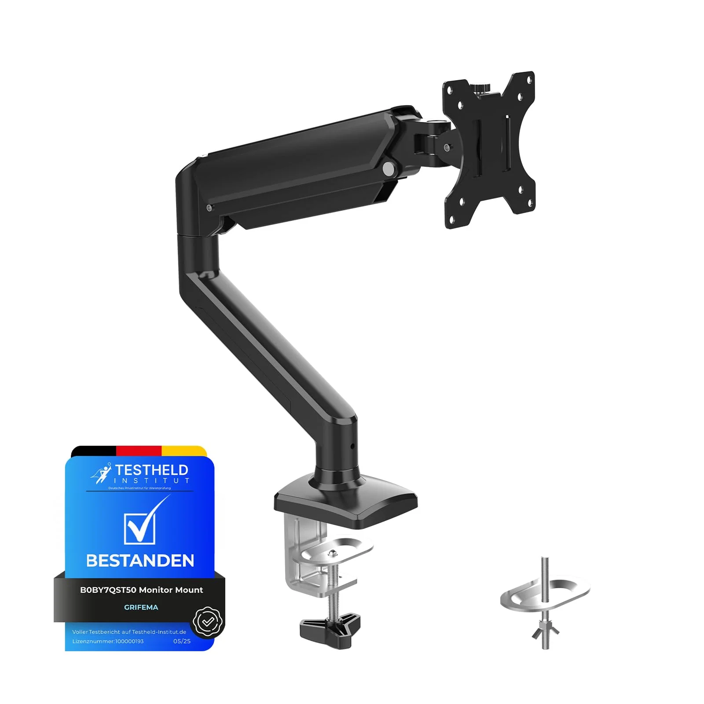
GRIFEMA GB2003-1 — Brazo de monitor con resorte de gas
Libera espacio de escritorio, ajustable en altura, giro e inclinación.
24,98 €
Ver en Amazon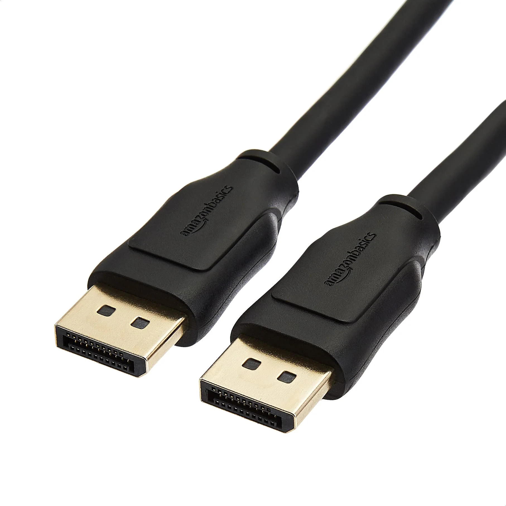
Amazon Basics — Cable DisplayPort 1.4 (8K/4K120Hz)
El cable correcto para aprovechar la tasa de refresco máxima de tu monitor.
9,49 €
Ver en Amazon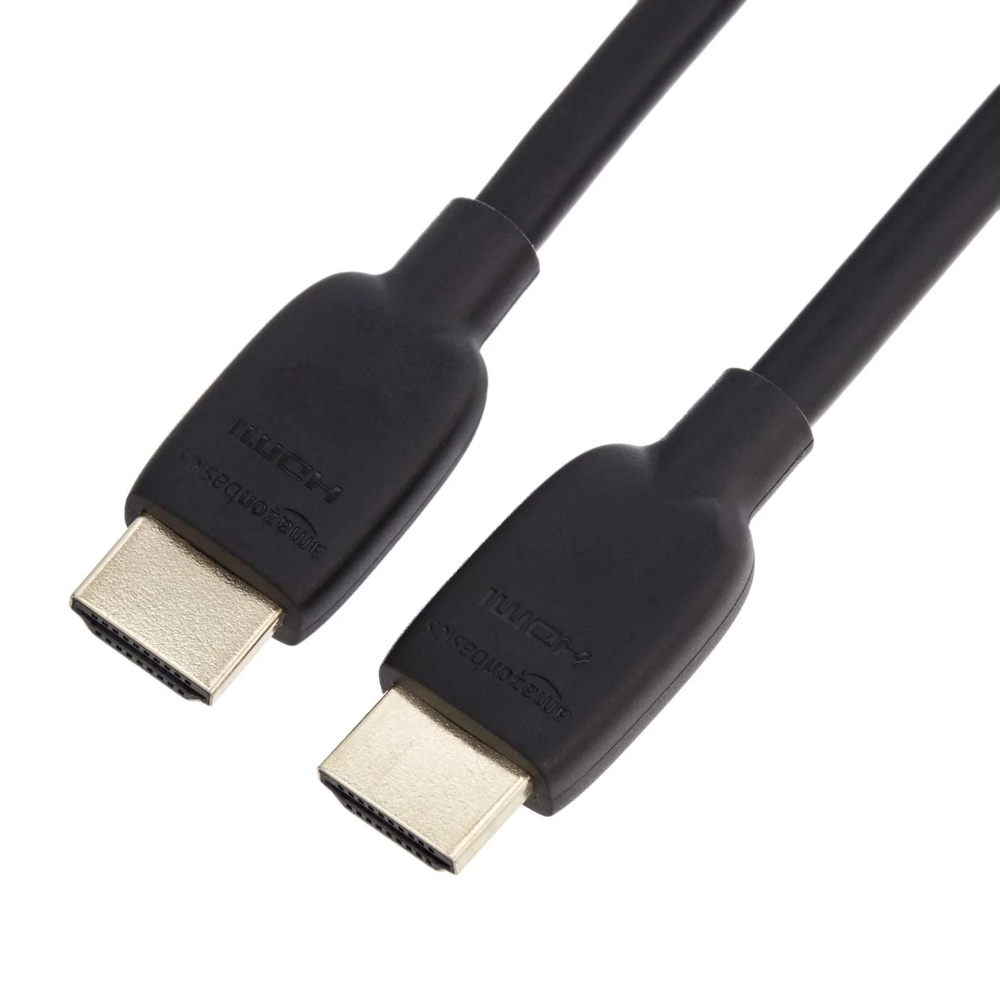
Amazon Basics — Cable HDMI 48Gbps (8K/4K120Hz)
Alternativa a DisplayPort para consolas y tarjetas gráficas con HDMI 2.1.
9,49 €
Ver en Amazon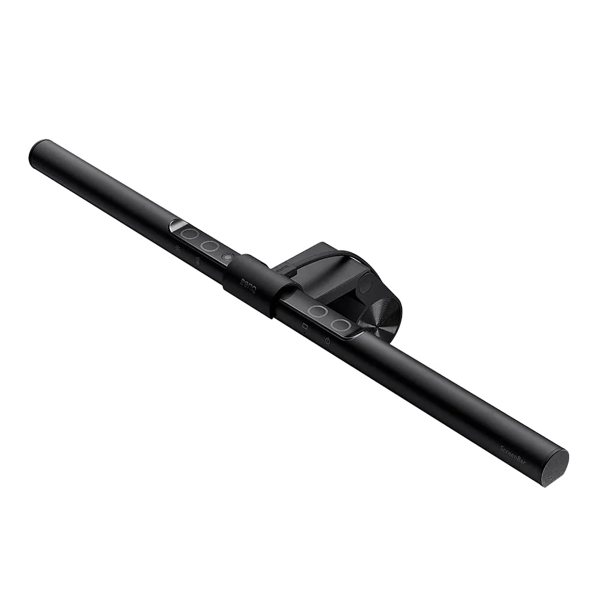
BenQ ScreenBar — Barra de luz para monitor
Ilumina el escritorio sin reflejos en la pantalla ni ocupar espacio.
133,70 €
Ver en Amazon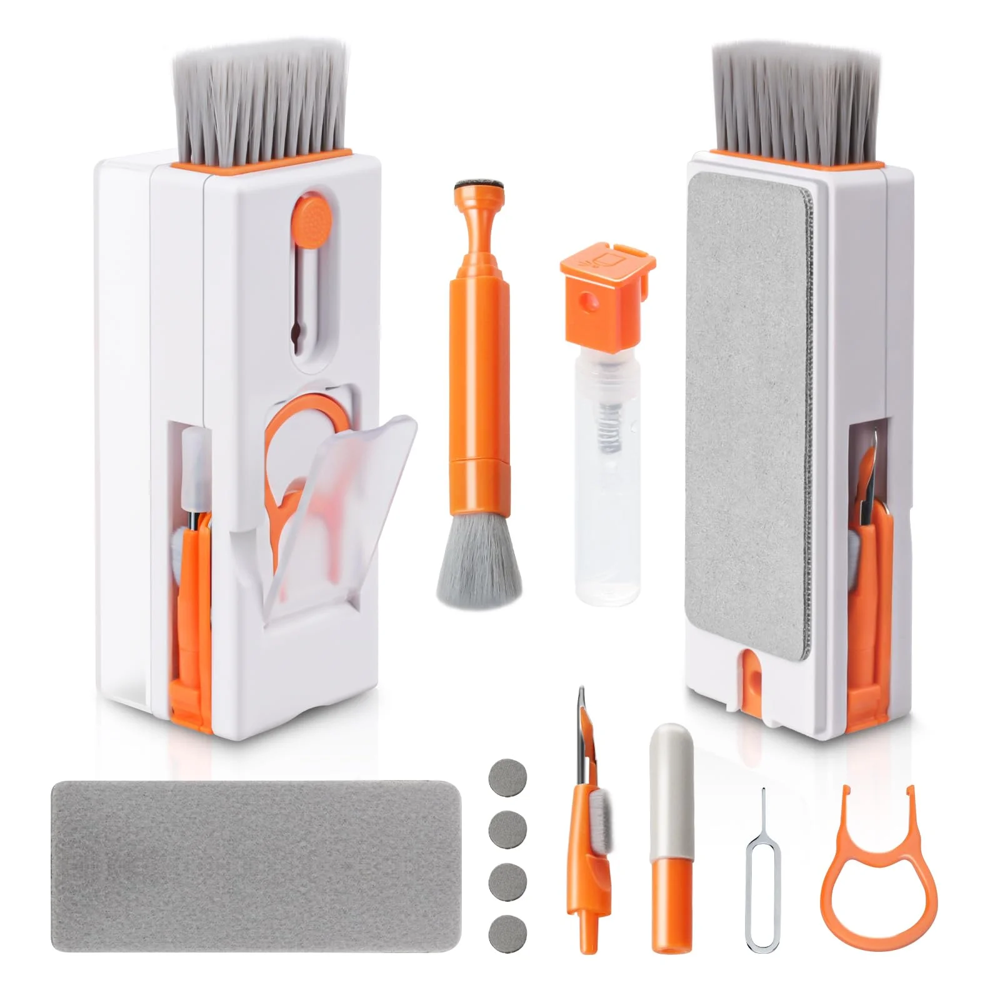
Alyvisun — Kit de limpieza 11 en 1
Para dejar la pantalla y el teclado impecables sin rayarlos.
10,69 €
Ver en Amazon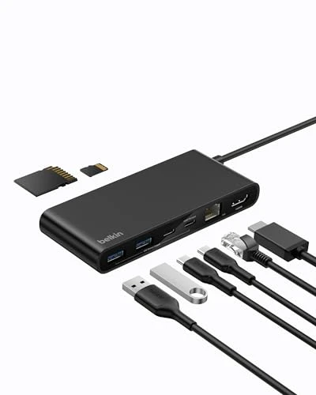
Belkin Connect Hub USB-C de 8 puertos
Conecta tu monitor por HDMI 4K@60Hz y carga el portátil a la vez (100W) desde un solo cable USB-C. -27% de oferta.
43,99 € (antes 59,99 €)
Ver en Amazon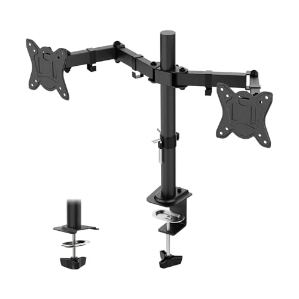
GRIFEMA GB2001A-2 — Brazo doble monitor
Para montar dos monitores de 13 a 27" con altura, giro e inclinación ajustables. -8% de oferta.
22,99 € (antes 24,99 €)
Ver en Amazon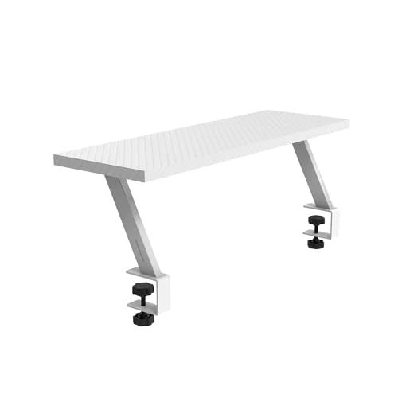
Mars Gaming MGDS — Elevador de escritorio para monitor
Eleva el monitor 17cm a una altura ergonómica y deja hueco libre para el teclado. -10% de oferta.
14,31 € (antes 15,90 €)
Ver en Amazon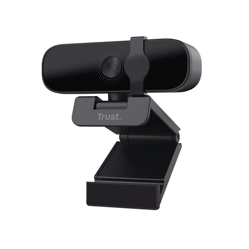
Trust Oran — Webcam 1080p con filtro de privacidad
Cámara con micrófono y tapa de privacidad integrada para videollamadas. -16% de oferta.
20,99 € (antes 24,99 €)
Ver en Amazon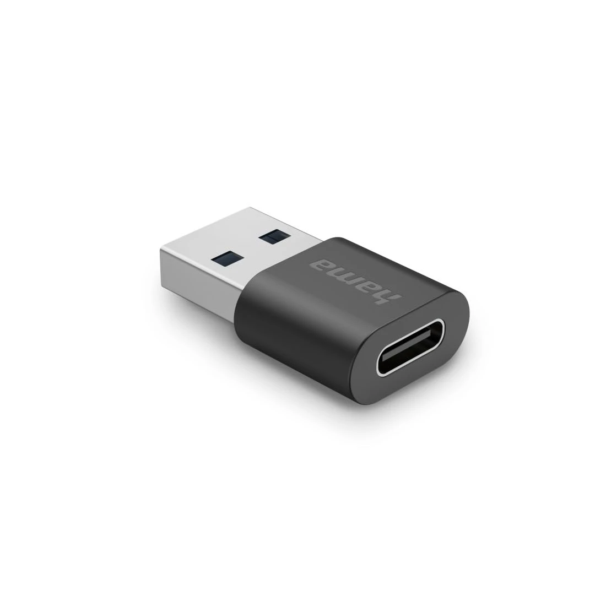
Hama Adaptador USB-A a USB-C (10 Gbit/s)
Convierte cualquier puerto USB-A en USB-C para usar cables y periféricos modernos en un PC o monitor más antiguo. -20% de oferta.
7,99 € (antes 9,99 €)
Ver en Amazon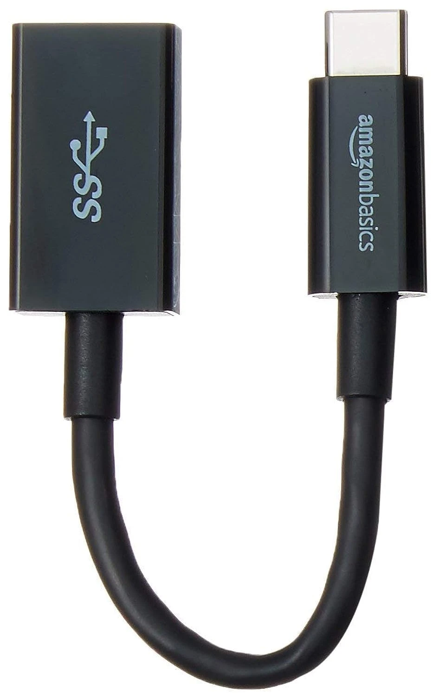
Amazon Basics Adaptador USB-C a USB-A
El camino inverso: conecta ratones, pendrives o teclados USB-A clásicos a un portátil o hub que solo tiene puertos USB-C. -14% de oferta.
8,38 € (antes 9,70 €)
Ver en AmazonScreenScope participa en el Programa de Afiliados de Amazon EU. Como afiliados, obtenemos ingresos por las compras que cumplen los requisitos aplicables, sin coste adicional para ti.